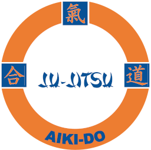

01
01SENSEI · FORMAND
Kenn Jørgensen
3. dan Ju-Jitsu
- Kampsport siden
- 1987
- Aktiv underviser siden
- 1993

AIKI-DOJU-JITSU · AMAGERMENNESKENE BAG AIKI-DO
Vi lærer af hinanden på måtten.
Mød vores instruktører og dem, der får hverdagen i klubben til at hænge sammen.
01 / PÅ MÅTTEN
Ju-jitsu med erfaring
og respekt for traditionen.
01SENSEI · FORMAND
3. dan Ju-Jitsu
 02
02SHIHAN · NÆSTFORMAND & SEKRETÆR
6. dan Ju-Jitsu · 1. dan Iaido
 03
03SENSEI · REVISOR
1. dan Ju-Jitsu
02 / BAG KULISSERNE
En forening er også alt det, der foregår uden for træningen. Her er klubbens kasserer.

KASSERER
3. kyu Ju-Jitsu
Trænet kampsport siden 2020.
VI SES TIL TRÆNING
Tag træningstøjet med, og prøv, om ju-jitsu er noget for dig.